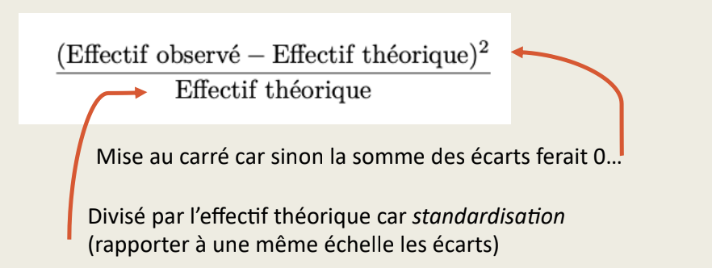
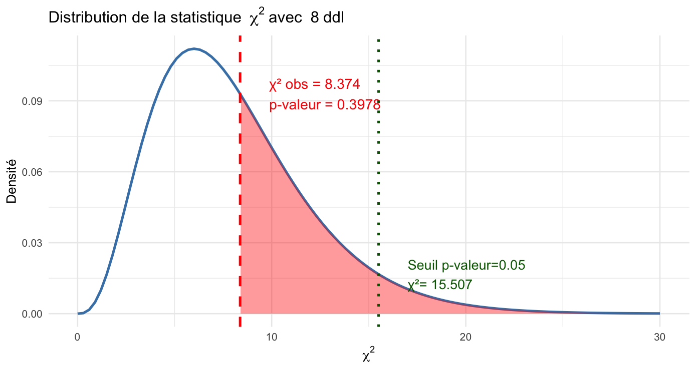

# On liste les packages dont on a besoin dans un vecteur nommé load.lib.
load.lib <- c("tidyverse","questionr","Hmisc","esquisse","kableExtra")
install.lib <- load.lib[!load.lib %in% installed.packages()] # On regarde les paquets qui ne sont pas installés
for (lib in install.lib) install.packages(lib,dependencies=TRUE) # On installe ceux-ci
sapply(load.lib,require,character=TRUE) # Et on charge tous les paquets
setwd("/home/groups/3genquanti/SoMix/HIES for workshop")
edu<-readRDS("edu.rds")3 Statistiques bivariées et graphiques
Dans ce chapitre, nous abordons maintenant les statistiques bivariées. Nous utilisons toujours la base edu.rds et les mêmes packages que dans le chapitre précédent.
Exercice
Create an empty R script.
Save this script in a folder (for instance, “WinterWorkshop”) and name it for instance “3Statbis.R”.
Load the edu database and run the commands below to install/load packages.
3.1 The association between a categorical variable and a numerical variable
In the chapter on univariate statistics, we discussed several indicators of the distribution of a numerical variable (minimum, maximum, mean, median). Thanks to the lines of code already set up, it is very easy to calculate these statistics for different categories of another categorical variable.
You simply need to add another function to compute these statistics for each category of a variable, namely group_by:
edu |>
group_by(province) |>
summarise(
min = min(distance, na.rm = TRUE),
mean = wtd.mean(distance,weights=finalweight_25per,na.rm = TRUE),
median = wtd.quantile(distance,probs=.5,weights=finalweight_25per,na.rm = TRUE),
max = max(distance, na.rm = TRUE),
n_na = sum(is.na(distance))
)Let’s study the distance to school according to the place of residence: urban, rural, or estate. This corresponds to the variable sector, with categories 1, 2, and 3. We can recode these categories using the icut() interface, or directly with the following code:
edu$sector_rec <- edu$sector |>
as.character() |>
fct_recode(
"Urban" = "1",
"Rural" = "2",
"Estate" = "3"
)
edu |>
group_by(sector_rec) |>
summarise(
min = min(distance, na.rm = TRUE),
mean = wtd.mean(distance,weights=finalweight_25per,na.rm = TRUE),
median = wtd.quantile(distance,probs=.5,weights=finalweight_25per,na.rm = TRUE),
max = max(distance, na.rm = TRUE),
n_na = sum(is.na(distance))
)Nothing prevents us from studying variations in the distance to school according to several categorical variables. For example, we can compute the mean and the median with respect to both the province and the place of residence:
edu |>
group_by(province,sector_rec) |>
summarise(
mean = wtd.mean(distance,weights=finalweight_25per,na.rm = TRUE),
median = wtd.quantile(distance,probs=.5,weights=finalweight_25per,na.rm = TRUE)
) |>
kbl(digits=1) |> kable_classic(full_width = F)
The distance to school tends to be higher in rural areas, and this difference is mainly driven by extreme values. Indeed, it is primarily the mean, which is more sensitive to large values, that reflects this gap, more so than the median.
edu |>
group_by(province,sector_rec) |>
summarise(
mean = wtd.mean(distance,weights=finalweight_25per,na.rm = TRUE)
) |>
pivot_wider(names_from=sector_rec,values_from=mean) |>
mutate(`Urban-Rural difference`=Urban-Rural) |>
kbl(digits=1) |> kable_classic(full_width = F)
We can clearly see from this last analysis that this pattern holds in all provinces (except North Western), but the gap varies: it is higher in the Sabaragamuwa and Southern provinces, where the distance to school for children in estate areas is particularly pronounced.
3.1.1 Résumer par la moyenne et l’écart-type
It is quite common in academic articles to describe quantitative variables by reporting the mean (a measure of central tendency) and the standard deviation (a measure of dispersion, equal to the square root of the variance).
edu |>
group_by(sector_rec) |>
summarise(
mean= mean(distance,na.rm=T),
sd= sd(distance,na.rm=T),
) |>
kbl(digits=1) |> kable_classic(full_width = F)
Why are these two indicators used? First, we can say from this table that, on average, the distance to school is higher for children in rural areas than in urban areas. There is also greater variability in the distance to school in rural areas (sd stands for standard deviation).
Tip
Should we summarize a variable by its mean or its median?
The first option is very common (especially in English-language journals) but is not necessarily the most appropriate…
When working with skewed (i.e., non-normal) distributions:
- The mean is sensitive to extreme values in the distribution.
- It may be best to have a look at both and plot the distributions!
Note: in fact, the standard deviation is then also not really a reliable indicator of dispersion describing the distribution. One may then prefer to calculate quantiles (e.g. quartiles, following Tukey’s 5 number summary!).
Exercise
Using esquisser, reproduce the following plot. Try to improve it by playing with color palettes, font sizes…
What is your take away from this plot and from the previous statistics?

3.2 The association between two categorical variables and the cross-tabulation
3.2.1 Some conventions for cross-tabulations
We now come to cross-tabulations to study the associations between two categorical variables.
First, let’s recall a few analysis conventions. It’s easy to get confused when creating cross-tabulations, so keep the following points in mind:
What is my response variable or dependent variable, i.e., the variable assumed to depend on another factor?
What is my independent variable, i.e., the variable assumed to have an effect on the dependent variable?
On peut par exemple ici supposer que le fait d’être actuellement scolarisé (variable r2_school_education) dépend du niveau de diplôme des parents, mais aussi de leur niveau économique, du lieu de résidence, etc.
To visualize whether a factor affects a dependent variable, we can create a cross-tabulation in which:
The dependent variable is placed in the columns.
The independent variable is placed in the rows.
Row percentages are calculated (we need to normalize the row counts to compare them!).
We then compare the rows within the same column.
Of course, this is theory.
There are many cases where we might be more interested in column percentages, or even total percentages, or we may want to swap rows and columns. Nevertheless, keeping these simple conventions in mind helps to stay oriented when navigating statistical analyses.
3.2.2 Practical application of the cross-tabulation
Nous retrouvons les fonctions du package questionr. Pour créer un tableau croisé des effectifs non pondérés, on pourra écrire :
edu$r2_school_education_rec <- edu$r2_school_education |>
as.character() |>
fct_recode(
"Currently attending" = "1",
"Never attended" = "2",
"Attended school in the past" = "3"
)
edu |> freqtable(edu_parents,r2_school_education_rec)La variable en ligne (ici, race) est la variable indépendante, c’est la première à être écrire, tandis que la variable en colonne (ici, salaire_quint) est la variable dépendante.
Pour obtenir des pourcentages en ligne, il suffit d’écrire :
Salaires |> freqtable(race,salaire_quint) |> rprop()Dans ce tableau, on peut aussi ajouter les effectifs totaux des lignes et par exemple ne pas mettre de décimales après la virgule :
Salaires |> freqtable(race,salaire_quint) |> rprop(n=T,digit=0)Bien sur, il est possible de réaliser un tableau des pourcentages en colonne :
Salaires |> freqtable(race,salaire_quint) |> cprop(n=T,digit=0)Ou des pourcentages totaux (qu’on appelle aussi pourcentages conjoints) :
Salaires |> freqtable(race,salaire_quint) |> prop(n=T,digit=0)3.2.3 Le tableau et son graphique
ON GARDE
On peut aussi réaliser un diagramme à barres empilées ou adjacentes de l’association entre la catégorie raciale et le niveau de salaire :

ON ENLEVE
On pourrait améliorer ce graphique de deux manières :
En inversant l’ordre des étiquettes empilées (Très élevé en haut, très faible en bas)
En mettant l’axe des Y en pourcentages (attention, il faut avoir installer le package scales)
ggplot(Salaires) +
aes(x = race, fill = fct_rev(salaire_quint)) + # Inverser l'ordre d'empilement
geom_bar(position = "fill") +
scale_y_continuous(labels = scales::percent_format()) + # Axe des Y en % avec package scales
scale_fill_brewer(palette = "PuRd", direction = -1,
guide = guide_legend(reverse = TRUE)) + # Légende dans le bon ordre
labs(
x = "Catégorie raciale",
y = "Pourcentage",
fill = "Quintile de salaire"
) +
theme_light() +
theme(
legend.position = "bottom",
axis.title.y = element_text(size = 18L),
axis.title.x = element_text(size = 18L),
axis.text.y = element_text(size = 18L),
axis.text.x = element_text(size = 18L),
legend.text = element_text(size = 18L),
legend.title = element_text(size = 18L)
)
Bonus 1
On peut vouloir plutôt réaliser un diagramme à barres adjacentes plutôt que empilées. Dans ce cas, il est plus simple de repartir du tableau des pourcentages en ligne :
#On crée le tableau croisé avec % en ligne
tab <- Salaires |>
freqtable(race, salaire_quint) |>
rprop(total=F) #On enlève les % totaux
# Il faut transformer ce tableau en format tidy pour le graphique
df_tab <- as.data.frame.matrix(tab) |> #transformation en une matrice de format data.frame
rownames_to_column("race") |> #Les lignes étaient des "row.names" auxquelles on assigne un nom de colonne
pivot_longer(
cols = -race,
names_to = "salaire_quint",
values_to = "pct"
) #On transforme le tableau de telle sorte que tous les % soient dans la même colonne et les modalités de salaire également.
df_tab$salaire_quint <- df_tab$salaire_quint |>
fct_relevel(
"Très faible","Faible","Moyen","Elevé","Très élevé"
)
ggplot(df_tab, aes(x = salaire_quint, y = pct / 100, fill = race)) +
geom_bar(stat = "identity",position = position_dodge2(width = 0.9,preserve="single"))+
geom_text(aes(label = paste0(round(pct,0), "%")),
position = position_dodge2(width = 0.9,preserve="single"),
vjust=-.3,
size = 5) +
scale_y_continuous(lim=c(0,.45),labels = scales::percent_format(accuracy = 1)) +
scale_fill_brewer(palette = "Dark2", direction = -1,
guide = guide_legend(reverse = T)) +
labs(
x = "Quintile de salaire",
y = "Pourcentage",
fill = "Catégorie raciale"
) +
theme_light() +
theme(
legend.position = "bottom",
axis.title.y = element_text(size = 18L),
axis.title.x = element_text(size = 18L),
axis.text.y = element_text(size = 18L),
axis.text.x = element_text(size = 18L),
legend.text = element_text(size = 18L),
legend.title = element_text(size = 18L)
)
Bonus 2
On pourrait aussi vouloir créer un diagramme à barres avec les étiquettes de valeurs de pourcentage sur le graphique. Dans ce cas, il est plus simple de repartir du tableau des pourcentages en ligne :
#On crée le tableau croisé avec % en ligne
tab <- Salaires |>
freqtable(race, salaire_quint) |>
rprop()
# Il faut transformer ce tableau en format tidy pour le graphique
df_tab <- as.data.frame.matrix(tab) |> #transformation en une matrice de format data.frame
rownames_to_column("race") |> #Les lignes étaient des "row.names" auxquelles on assigne un nom de colonne
select(-Total) |> #On enlève les lignes de total
pivot_longer(
cols = -race,
names_to = "salaire_quint",
values_to = "pct"
) #On transforme le tableau de telle sorte que tous les % soient dans la même colonne et les modalités de salaire également.
df_tab$salaire_quint <- df_tab$salaire_quint |>
fct_relevel(
"Très faible","Faible","Moyen","Elevé","Très élevé"
)
# Graphique
ggplot(df_tab, aes(x = race, y = pct / 100, fill = fct_rev(salaire_quint))) +
geom_bar(stat = "identity") +
geom_label(aes(label = paste0(round(pct,0), "%")),
position = position_stack(vjust = 0.5),
size = 5) +
scale_y_continuous(labels = scales::percent_format(accuracy = 1)) +
scale_fill_brewer(palette = "PuRd", direction = -1,
guide = guide_legend(reverse = T)) +
labs(
x = "Catégorie raciale",
y = "Pourcentage",
fill = "Quintile de salaire"
) +
theme_light() +
theme(
legend.position = "bottom",
axis.title.y = element_text(size = 18L),
axis.title.x = element_text(size = 18L),
axis.text.y = element_text(size = 18L),
axis.text.x = element_text(size = 18L),
legend.text = element_text(size = 18L),
legend.title = element_text(size = 18L)
)
3.2.4 La force de l’association
ON ENLEVE
Pour étudier l’intensité de l’association entre deux variables qualitatives, l’indice le plus évident est le V de Cramer qui prend une valeur entre 0 (pas d’association) et 1 (association parfaite).
À partir de 0,2 ou 0,3, on pourra considérer qu’il y a une association notable.
On le calcule ainsi :
tab <- Salaires |>
freqtable(race, salaire_quint)
cramer.v(tab)3.2.5 Un mot sur le test du khi-deux
ON DEPLACE PLUS LOIN
Difficile de ne pas évoquer pour finir le test du chi-deux, sans toutefois trop s’y attarder. Précisons que Julien Barnier a écrit un récapitalutif très exhaustif sur ce qu’est et n’est pas le test du khi-deux (ou chi-deux ou -deux ou chi-squared…).
À quoi sert le test du khi-deux :
Déterminer la probabilité que les lignes et les colonnes du tableau croisé sont indépendantes
Évaluer si la répartition des effectifs dans une table de contingence est significativement différente de la table calculée sous l’hypothèse d’indépendance des deux variables croisées
La distribution du salaire est-elle indépendante de celle de la catégorie raciale des individus ? Y-a-t-il une association entre race et salaire ?
Explications sur le test du khi-deux
On va poser un test statistique, avec une hypothèse H0, ou hypothèse nulle qui est que :
La distribution des quintiles de salaire est indépendante de la catégorie raciale.
On cherche à savoir à quoi ressemblerait notre tableau croisé si les deux variables étaient effectivement indépendantes l’une de l’autre et quelle est la probabilité (la p-valeur) pour que les deux variables soient effectivement indépendantes l’une de l’autre, modulo nos fluctuations d’échantillonnage.
En pratique, les variables sont indépendantes si :
Les pourcentages lignes du tableau croisé sont les mêmes pour toutes les lignes
Les pourcentages colonnes du tableau croisé sont les mêmes pour toutes les colonnes
Dans notre exemple, lignes et colonnes ne semblent pas très indépendantes.
Mais dans un échantillon issu d’une enquête, il est rare que les variables croisées soient parfaitement indépendantes car les données du tableau sont dépendantes de l’échantillon interrogé et tout échantillon est soumis à des biais (qui, si l’échantillon a été construit de manière aléatoire, sont dus au hasard, donc des fluctuations d’échantillonage).
Le test du khi-deux permet de savoir à partir de quel seuil on peut estimer que les variations observées par rapport à la situation d’indépendante sont dues au hasard et à partir de quand elles sont dues à un lien entre les variables.
À partir du tableau des effectifs, on peut calculer les effectifs théoriques, si les deux variables étaient indépendantes, grâce aux marges des lignes et des colonnes :
Effectif théorique d’une cellule = (total ligne x total colonne) / total global
Ce qu’on peut calculer manuellement à partir des marges (les totaux) qu’on peut obtenir par exemple en faisant ainsi :
Salaires |>
freqtable(race, salaire_quint) |>
prop(n=T)L’effectif théorique de la cellule Blanc x Très faible est donc 90,6 car :
110*440/534Heureusement R dispose de la fonction chisq.test() qui permet notamment d’afficher les effectifs théoriques :
tab<-Salaires |>
freqtable(race, salaire_quint)
chi<-chisq.test(tab)
chi$expectedPour mémoire les effectifs observés sont :
chi$observedAlors à quel point les effectifs théoriques divergent des effectifs observés ?
Pour ce faire, on calcule des “khi-deux partiels” définis comme la distance standardisée entre les effectifs théoriques et observés :

Ces khi-deux partiels peuvent être calculés comme ceci :
(chi$expected-chi$observed)^2/chi$expected
Ici, on voit déjà que les écarts à l’indépendance sont les plus élevés pour la cellule HispaniquexTrès faible, ce que nous avions repéré avec une surreprésentation de cette catégorie raciale parmi ceux qui gagnent de faibles salaires.
On calcule ensuite la valeur du khi-deux du tableau, qui correspond à la somme des khi-deux partiels :
sum((chi$expected-chi$observed)^2/chi$expected)Qu’on obtient aussi ici :
chi$statisticEst-ce que cette valeur est faible ou élevée ?
On va pouvoir comparer cette statistique à la “loi du khi-deux”, une distribution statistique qui nous donne les valeurs théoriques du khi-deux d’un tableau sous condition d’indépendance.
Cette loi dépend d’un paramètre : le nombre de degrés de libertés. Quel est le nombre de degrés de libertés ici ?
Il dépend grosso modo de la taille du tableau :
(Nombre de lignes - 1) x (Nombre de colonnes - 1)
Ici, nous avons 3 lignes et 5 colonnes, donc le degré de liberté (ddl) est égal à 8.
On le vérifie ici :
chi$parameter
On va enfin calculer une probabilité (une p-valeur), qui correspond à l’aire sous la courbe théorique à droite de la valeur du khi-deux observée, qui ici vaut 0,397, comme indiqué sur la figure.
En effet, rappelons-nous, la p-valeur c’est la probabilité que le khi-2 théorique soit supérieur ou égal au khi-2 observé sous condition d’indépendance.
Ici, on voit que si les deux variables sont indépendantes, il y a une probabilité de presque 40 % pour que par hasard on obtienne une valeur du khi-2 au moins aussi élevée que celle qu’on a observé (8,374).
Autrement dit, notre valeur du khi-deux est assez plausible / compatible avec le fait que les deux variables soient indépendantes !
Cette p-valeur nous empêche de rejeter l’hypothèse d’indépendance entre catégorie racial et salaire.
En sciences sociales, on retient généralement le seuil d’une p-valeur de 0,05 en dessous de laquelle on estime qu’on peut rejeter l’hypothèse d’indépendance.
Pour ce faire, il aurait fallu ici obtenir un khi-2 observé au moins égal à 15,507 (on en est loin !).

Alors que conclure ? On ne rejette pas H0, l’hypothèse d’indépendance.
Mais pouvons-nous affirmer que le salaire ne dépend pas de la catégorie raciale ? Eh bien, pas vraiment non plus. En gros, on n’a pas rejeté l’idée que les deux variables sont indépendantes, et les variations observées peuvent être dues à des fluctuations d’échantillonnage… ou pas.
Et si la p-valeur avait été inférieure à 0,05 ? On aurait pu rejeter H0 l’hypothèse d’indépendance et on aurait considéré qu’un lien existe entre les deux variables.
On peut vérifier la p-valeur calculée comme ceci :
chi$p.valueOn pose l’hypothèse nulle (H0) que les deux variables sont indépendantes. On fixe un seuil de significativité pour la p-valeur égal à 0,05, en dessous de laquelle on rejette l’hypothèse d’indépendance et à ce moment là on considère qu’un lien existe entre les variables :
tab<-Salaires |>
freqtable(race, salaire_quint)
chi<-chisq.test(tab)
chiLa p-valeur est supérieure à 0,05, donc on ne peut pas rejeter H0 et on ne peut pas conclure qu’un lien existe entre les deux variables.
Exercice
Tester l’hypothèse d’un lien entre le sexe et les quintiles de salaire.
ON MET ICI le RECODAGE DES VARIABLES QUALIS
3.3 Exercices
ON ALLEGE